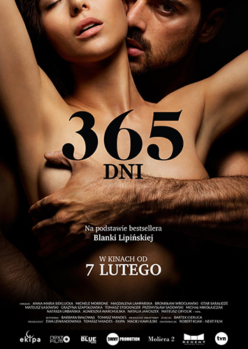

Iron Man là một siêu anh hùng hư cấu xuất hiện trong truyện tranh
của Mỹ được xuất bản bởi Marvel Comics, cũng như các phương tiện
truyền thông liên quan. Nhân vật này đã được sáng tác bởi nhà văn
- nhà biên tập Stan Lee, được phát triển bởi Larry Lieber, và được
thiết kế bởi họa sĩ Don Heck và Jack Kirby.
Lật mặt 6
Nội dung phim kể về tấm vé có mệnh giá 10 ngàn đồng và sở hữu
những con số "định mệnh" gồm 10, 16, 18, 20, 27, 28 - đây là tập
hợp những con số ngày sinh của hội bạn thân gồm 6 người. Câu
chuyện bắt đầu khi cả 6 người bạn thân quyết định mua một tấm vé
số có dãy số là tập hợp ngày sinh của cả 6 người. Và nếu như tấm
vé này may mắn trúng giải, họ sẽ chia đều tiền thưởng cho cả 6
người. Và quả nhiên, tấm vé định mệnh này đã đem về cho nhóm một
giải thưởng tới hơn 130 tỷ. Tuy nhiên, người giữ tấm vé số là An
(Thanh Thức) lại gặp tai nạn tang thương và tấm vé số nằm ở ốp
lưng điện thoại đã theo anh xuống mồ. Chính lúc này, dã tâm và bản
năng của con người trỗi dậy. Hội bạn còn lại 5 người, kẻ thì muốn
đào mộ để lấy tấm vé bị chôn trong mồ, người thì muốn ngăn cản bởi
vì đó là phạm pháp.
DB super heroes
Dragon Ball Super: Super Hero là một bộ manga Nhật Bản do
Toyotarou viết và minh họa. Đây là một phần spin-off của loạt
anime Dragon Ball Super và là một tiếp nối của manga Dragon Ball
gốc. Câu chuyện theo sự phiêu lưu của Goku và những người bạn của
anh ta khi họ bảo vệ Trái Đất chống lại nhiều đe dọa và tham gia
trận chiến với kẻ thù mạnh mẽ. Bộ phim bắt đầu với những phần hậu
trường của Giải đấu sức mạnh, một giải đấu được tổ chức để xác
định những sinh vật mạnh nhất trong vũ trụ. Sau khi đánh bại thần
ác Zamasu và khôi phục hòa bình cho vũ trụ, Goku và những người
bạn của anh ta trở lại cuộc sống bình thường của họ trên Trái Đất.
Tuy nhiên, họ sớm phải đối mặt với những thách thức mới khi những
kẻ thù mạnh mẽ đến trên sao Hỏa, muốn kiểm tra sức mạnh của họ và
phá hủy Trái Đất.
Spider man
Người nhện là một siêu anh hùng hư cấu trong các truyện tranh xuất
bản bởi Marvel Comics. Nhân vật này được sáng tạo bởi nhà văn Stan
Lee và nhà văn-nghệ sĩ Steve Ditko, lần đầu xuất hiện trong
Amazing Fantasy #15.
One Piece
Bối cảnh One Piece Film Red diễn ra ở hòn đảo âm nhạc Elegia, nơi
diva nổi tiếng bậc nhất thế giới tên Uta thực hiện buổi biểu diễn
trực tiếp đầu tiên trước công chúng. Uta đứng trên sân khấu với
một ước mơ giản dị rằng ” Âm nhạc của tôi sẽ khiến cho thế giới
hạnh phúc”. Đằng sau hình ảnh cô ca sĩ sở hữu giọng hát được đánh
giá là ở “Đẳng cấp hoàn toàn khác” là một thân thế vô cùng bí ẩn
được che giấu. Băng hải tặc Mũ Rơm và các fan khác của Uta từ
nhiều thế lực khác nhau như hải tặc lẫn hải quân đều đã cùng tề
tựu về buổi biểu diễn này. Biến cố bắt đầu ngay khi sự thật kinh
hoàng được tiết lộ rằng Uta chính là “con gái của Shanks”. Luffy
và Uta lần đầu tiên hội ngộ sau lần gặp gỡ vào 12 năm trước tại
Làng Foosha.
Thor
Thor (công chiếu ở Việt Nam với tên Thần Sấm) là một bộ phim nói
về nhân vật siêu anh hùng cùng tên trong Marvel Comics. Được sản
xuất bởi Marvel Studios và phân phối bởi Paramount Pictures, đây
là bộ phim thứ 4 trong Vũ trụ Điện ảnh Marvel. Nó được đạo diễn
bởi Kenneth Branagh, được viết bởi đội ngũ viết kịch bản của
Ashley Edward Miller và Zack Stentz cùng với Don Payne, và Chris
Hemsworth đóng vai nhân vật chính cùng với Natalie Portman, Tom
Hiddleston, Stellan Skarsgård, Colm Feore, Ray Stevenson, Idris
Elba, Kat Dennings, Rene Russo và Anthony Hopkins. Sau khi tham
gia một cuộc chiến không cần thiết, Thor (Chris Hemsworth) bị trục
xuất khỏi Asgard đến Trái đất, bị tước bỏ sức mạnh và chiếc búa
Mjölnir. Khi em trai Loki (Tom Hiddleston) âm mưu chiếm ngai vàng
Asgard, Thor phải chứng tỏ mình xứng đáng.
online streaming
new movies
Iron Man là một siêu anh hùng hư cấu xuất hiện trong truyện
tranh của Mỹ được xuất bản bởi Marvel Comics, cũng như các
phương tiện truyền thông liên quan. Nhân vật này đã được sáng
tác bởi nhà văn - nhà biên tập Stan Lee, được phát triển bởi
Larry Lieber, và được thiết kế bởi họa sĩ Don Heck và Jack
Kirby.
Iron man2022
4K
137 min8.5
Thor (công chiếu ở Việt Nam với tên Thần Sấm) là một bộ phim nói
về nhân vật siêu anh hùng cùng tên trong Marvel Comics. Được sản
xuất bởi Marvel Studios và phân phối bởi Paramount Pictures, đây
là bộ phim thứ 4 trong Vũ trụ Điện ảnh Marvel. Nó được đạo diễn
bởi Kenneth Branagh, được viết bởi đội ngũ viết kịch bản của
Ashley Edward Miller và Zack Stentz cùng với Don Payne, và Chris
Hemsworth đóng vai nhân vật chính cùng với Natalie Portman, Tom
Hiddleston, Stellan Skarsgård, Colm Feore, Ray Stevenson, Idris
Elba, Kat Dennings, Rene Russo và Anthony Hopkins. Sau khi tham
gia một cuộc chiến không cần thiết, Thor (Chris Hemsworth) bị
trục xuất khỏi Asgard đến Trái đất, bị tước bỏ sức mạnh và chiếc
búa Mjölnir. Khi em trai Loki (Tom Hiddleston) âm mưu chiếm ngai
vàng Asgard, Thor phải chứng tỏ mình xứng đáng.
Thor2018
4K
152 min9.5
Nội dung phim kể về tấm vé có mệnh giá 10 ngàn đồng và sở hữu
những con số "định mệnh" gồm 10, 16, 18, 20, 27, 28 - đây là tập
hợp những con số ngày sinh của hội bạn thân gồm 6 người. Câu
chuyện bắt đầu khi cả 6 người bạn thân quyết định mua một tấm vé
số có dãy số là tập hợp ngày sinh của cả 6 người. Và nếu như tấm
vé này may mắn trúng giải, họ sẽ chia đều tiền thưởng cho cả 6
người. Và quả nhiên, tấm vé định mệnh này đã đem về cho nhóm một
giải thưởng tới hơn 130 tỷ. Tuy nhiên, người giữ tấm vé số là An
(Thanh Thức) lại gặp tai nạn tang thương và tấm vé số nằm ở ốp
lưng điện thoại đã theo anh xuống mồ. Chính lúc này, dã tâm và
bản năng của con người trỗi dậy. Hội bạn còn lại 5 người, kẻ thì
muốn đào mộ để lấy tấm vé bị chôn trong mồ, người thì muốn ngăn
cản bởi vì đó là phạm pháp.
Lật mặt 62023
FHD
132 min8
Người nhện là một siêu anh hùng hư cấu trong các truyện tranh
xuất bản bởi Marvel Comics. Nhân vật này được sáng tạo bởi nhà
văn Stan Lee và nhà văn-nghệ sĩ Steve Ditko, lần đầu xuất hiện
trong Amazing Fantasy #15.
Spider man2020
FHD
130 min9
Câu chuyện của Flash bắt đầu khi Barry Allen (Ezra Miller thủ
vai) sử dụng siêu năng lực của mình để du hành thời gian nhằm
thay đổi những sự kiện trong quá khứ. Nhưng khi nỗ lực cứu lấy
gia đình mình vô tình thay đổi tương lai, Barry bị kẹt lại trong
một thực tại, nơi tướng Zod tái xuất và đe dọa hủy diệt tất cả,
nhưng không có bất cứ siêu anh hùng nào đứng ra giải cứu… Trừ
khi Barry có thể thuyết phục một Batman rất khác và giải cứu một
cư dân Kryptonian đang bị cầm tù… dẫu có thể đó không phải người
mà anh thực sự tìm kiếm. Để giải cứu thế giới hiện tại cũng như
trở lại tương lai mình từng biết, niềm hy vọng duy nhất của
Barry là phải chạy đua vì cuộc đời mình. Vậy nhưng, sự hy sinh
tuyệt đối đó có là đủ để đưa thế giới về lại như ban đầu?
The Flash2023
4K
144 min8.8
Bộ phim Tà Chú Cấm khám phá nỗi ám ảnh từ sự kiện thật tại Thái
Lan, kể về gia đình Ning và Kwin khi họ chuyển đến căn hộ chung
cư giá rẻ. Hành vi kỳ lạ của Kwin và hình xăm bí ẩn dẫn đến nguy
hiểm đối với con gái Ing. Bí mật đen tối trong ngôi nhà thuê
đang chờ đợi.
Tà chú cấm 2023
4K
122 min8
Lịch chiếu J-hope In The Box và mua vé J-hope In The Box. J-hope
là nghệ sĩ Hàn Quốc đầu tiên biểu diễn trên sân khấu chính của
lễ hội âm nhạc lớn nhất thế giới "Lollapalooza" ở Chicago. Jung
Hoseok thuở nhỏ giờ được biết đến với nghệ danh j-hope, là
dancer kiêm rapper của nhóm nhạc nổi tiếng thế giới BTS. Sau
thành công vang dội của "Dynamite" và "Butter", anh ấy bắt đầu
thực hiện album solo chính thức đầu tiên của mình. J-hope In The
Box là bộ phim ghi lại cuộc sống 200 ngày của Hobi, từ quá trình
sản xuất "Jack In The Box" đến quá trình chuẩn bị và xuất hiện
trên sân khấu "Lollapalooza". Giữa những lo lắng và băn khoăn,
j-hope đã có một bước nhảy vọt, chuẩn bị bước ra khỏi chiếc hộp
và chào đón thế giới.
J-Hope In The Box2023
4K
87 min8.3
Lịch chiếu Vây Hãm Không Lối Thoát và review Vây Hãm Không Lối
Thoát tại Moveek. Quái vật cơ bắp Seok-do (Ma Dong Seok) dẫn đầu
đội hình sự truy lùng đường dây buôn chất cấm của thiếu gia Joo
Seong Cheol. Cuộc truy đuổi càng thêm gay cấn khi cú đấm công lý
"chú Ma" chạm trán thanh kiếm lừng lẫy chốn giang hồ Nhật Bản.
Vây Hãm Không Lối Thoát2023
4K
105 min9.2
Watch anywhere
Our services
Download your shows watch offline.
Enjoy on Your TV
Turn on your TV and watch film or many TV shows
Watch everywhere
You can watch film everywhere only using smartphone
online streaming
Top rated movies
Sáu năm trước, Lý Nhược Nam bị nguyền rủa vì phạm phải điều cấm
kị trong tôn giáo. Giờ đây, cô phải bảo vệ con gái trước hậu quả
của những hành động mình gây ra.
Incantation2022
FHD
111 min8.5
Sau khi mở công ty thám tử riêng, Nick và Audrey Spitz có được
một vụ án giúp sự nghiệp lên hương khi người bạn tỷ phú của họ
bị bắt cóc trong đám cưới của anh ấy.
Murder Mystery 22023
4K
91 min9
Black Adam là câu chuyện gần 5.000 năm sau khi anh ta được ban
cho sức mạnh toàn năng của các vị thần Ai Cập - và bị cầm tù
nhanh chóng - Black Adam được giải thoát khỏi ngôi mộ trần gian
của mình, sẵn sàng giải phóng hình thức công lý độc nhất của anh
ta trên thế giới hiện đại.
Black Adam2022
4K
120 min9.1

365 Ngày Yêu Anh - 365 Days là cuộc tình lãng mạn và kỳ lạ giữa
Laure Biel và anh chàng Massimo Torricelli – một trùm mafia gốc
Ý. Với bản tính bạo lực, tàn khốc và lạnh lùng, Massimo bắt cóc
Laure Biel và ra điều kiện cô có 365 ngày để nhận lời yêu anh
ta, nếu không… Liệu tình yêu có thể xảy ra? Mọi chuyện sẽ như
thế nào?
365 Days2020
FHD
118 min8
Từ Khi Có Anh chuyển thể từ tiểu thuyết nổi tiếng của tác giả
Anna Todd, After là câu chuyện rung động tình yêu đầu đời của
Tessa - một nữ sinh năm nhất gương mẫu với anh chàng nổi loạn
Hardin Scott.
After2019
FHD
105 min8.5
Dark Desire (Season 1) | Dục Vọng Đen Tối (Phần 1) là series
phim truyền hình kinh dị, giật gân, tội phạm của Mexico, do công
ty Argos Comunicación sản xuất cho Netflix. Phim dài 18 tập, tập
trung vào nhân vật nữ chính Alma Solares (Maite Perroni) và các
mối quan hệ phức tạp xung quanh cô. Alma Solares là một giáo sư
đại học đã kết hôn với cuộc sống gia đình gặp khủng hoảng và
thất vọng, nghi ngờ chồng ngoại tình… Một lần đi nghỉ cuối tuần
cùng bạn thân, cô gặp chàng trai đáng tuổi con nhưng quyến rũ
Dario Guerra (Alejandro Speitzer) trong một bữa tiệc, rồi bị
cuốn vào chuyện tình một đêm nóng bỏng. Những tưởng gặp dịp thì
chơi, Alma không ngờ tình trẻ lại là sinh viên của mình. Họ bị
cuốn theo những rắc rối trong một mối quan hệ phức tạp
Dark Desire2020
FHD
40 min8
Nhóm bạn 4 người "hội ế" tái ngộ sau thời gian dài không gặp,
vào đúng kỉ niệm ngày cưới thành viên nhóm - Camy. Cô là người
duy nhất thoát ế, có cuộc sống trong mơ bên người chồng tài hoa
Đăng Minh. Quỳnh Lam trở thành nhà thiết kế nổi tiếng, Linh Đan
thành đạt ở vai trò luật sư, Ken mở phòng Gym. Từ buổi họp mặt
ấy, những bí mật riêng tư của mỗi người dần hé lộ....
Naked Truth2022
FHD
90 min8.8
Cô Gái Thế Kỷ 20 kể về năm 1999, một cô nàng tuổi teen theo dõi
sát sao một nam sinh trong trường thay cho cô bạn thân si tình.
Nhưng rồi, chính cô lại bị cuốn vào câu chuyện tình của riêng
mình.